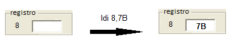
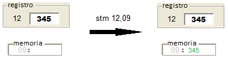

Tipos de instrucciones
Instrucciones de transferencia
Mueven datos de una parte a otra del sistema; desde y hacia la memoria principal, los registros de datos y puertos E/S. Las instrucciones de transferencia son las siguientes:
Instrucción LDM
Propósito: Carga un registro con un patrón de bits almacenado en una celda de memoria.
Sintaxis: Registro, dirección de la celda de memoria
Ejemplo: Cargar el registro 5 con el contenido de la celda de memoria cuya dirección es 128.
Instrucción LDI
Propósito: Carga un registro con un patrón de bits.
Sintaxis: Registro, patrón de bitsInstrucción STM
Ejemplo: Cargar el registro 8 con el patrón de bits 123.
Propósito: Almacena un patrón de bits contenido en un registro en una celda de memoria a través de su dirección.
Sintaxis: stm Registro, dirección de memoria

Ejemplo: Cargar el contenido del registro 12 a la celda de memoria cuya direccion es 9.
Instrucción COP
Propósito: Copia el patrón de bits de un registro a otro.
Sintaxis: cop Registro origen, registro destino
Ejemplo: Copiar el contenido del registro 10 al registro 12.
Instrucciones de aritméticas
Se usan para realizar operaciones aritméticas sobre los operandos. Instrucción ADD
Propósito: Suma los patrones de bits de dos registros fuentes en complemento a 2 y guarda el resultado en un registro destino.
Sintaxis: add Registro destino, Registro fuente 1, Registro fuente 2
Ejemplo: Guardar en el registro 7 la suma de los registros 2 y 3.
Instrucción ADDF
Propósito: Suma los patrones de bits de dos registros fuentes en punto flotante y guarda el resultado en un registro destino.
Sintaxis: addf Registro destino, Registro fuente 1, Registro fuente 2
Ejemplo: Guardar en el registro 7 la suma de los registros 2 y 3.
Instrucciones lógicas
Realizan una operacion logica entre dos operandos. Las instrucciones aritméticas son las siguientes: Instrucción OR
Propósito: Aplica la disyuncion lógica OR sobre los patrones de bits contenidos en dos registros fuentes y guarda el resultado en un registro destino.
Sintaxis: or Registro destino, Registro fuente 1, Registro fuente 2Instrucción AND
Ejemplo: Guardar en el registro 4 la operación lógica OR de los registros 12 y 13.
Propósito: Aplica la conjunción lógica AND sobre los patrones de bits contenidos en dos registros fuentes y guarda el resultado en un registro destino.
Sintaxis: and Registro destino, Registro fuente 1, Registro fuente 2Instrucción XOR
Ejemplo: Guardar en el registro 4 la operación lógica AND de los registros 12 y 13.
Propósito: Aplica la disyunción lógica exclusiva XOR sobre los patrones de bits contenidos en dos registros fuentes y guarda el resultado en un registro destino.
Sintaxis: xor Registro destino, Registro fuente 1, Registro fuente 2
Ejemplo: Guardar en el registro 4 la operación lógica XOR de los registros 8 y 12.
Instrucción de desplazamiento
Realiza una rotación de los bits de un registro una cantidad determinada de veces. Instrucción ROTD
Propósito: Rota el patrón de bits de un registro determinado una cantidad de veces a la derecha.
Sintaxis: rotd Registro, cantidad de veces a la derecha
Ejemplo: Rotar una vez a la derecha el contenido del registro 12.
Instrucción de bifurcación
Instrucción JPZ
Propósito: Salta a una dirección indicada cuando el patrón de bits contenido en un registro determinado vale 0.
Sintaxis: jpz Registro, tag_de_salto
jpz12,tag_inicio
Ejemplo: Salta al tag_inicio si el contenido del registro 12 vale 0.
Instrucción de fin
Instrucción RET
Propósito: Finaliza la ejecución del programa.
Sintaxis: ret